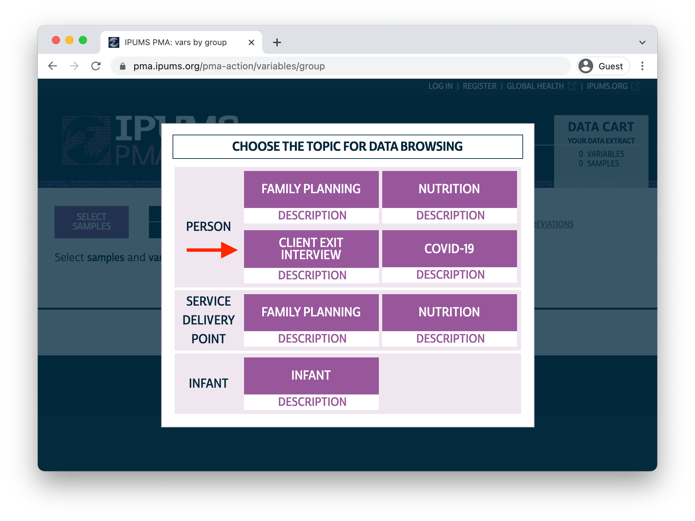

Women receiving family planning services assess their care in a new data series from PMA.
This fall, IPUMS PMA released baseline data from a new study examining women’s assessment of care received from providers of family planning services. Previously, we’ve seen how PMA service delivery point (SDP) surveys can be combined with surveys of households and women sampled within the same geographically defined enumeration areas. These new Client Exit Interview (CEI) surveys represent women who have received care from a specific provider included in a contemporaneous SDP sample.
Interviews for samples included in this release were conducted between December 2019 and November 2020. Women aged 15-49 receiving services at a participating SDP were approached by interviewers and asked to reflect on their visit. As we’ll see, most questions were given only to women who received or discussed a family planning method with their provider. Questions address whether the woman received her preferred method, whether the advantages or disadvantages of certain methods were discussed, and how she felt about the overall experience.
Women who completed the baseline interview were invited to participate in a follow-up telephone interview six months afterward, but these follow-ups were canceled in most PMA countries because of disruptions caused by COVID-19. Coming this spring, IPUMS PMA plans to release data from a second round of baseline CEI interviews collected one year after the first round; from then onward, we expect to release six month follow-up interviews following each baseline survey.
Today, we’re launching a new series devoted to showcasing the first round of CEI baseline surveys. Let’s see what’s included in the release!
CEI surveys are currently available from six PMA countries (more countries will be included in the second round planned for release in 2022):
As we’ve discussed elsewhere, up to three public-sector and three private-sector facilities are sampled for each enumeration area in a given SDP survey. Sampled SDPs were eligible to host client exit interviews only if their daily client volume was three or more. (We’ll show how to link SDP and CEI data together in an upcoming post.)
CEI interviewers were present at eligible SDPs for two business days during which family planning services were offered to clients. They invited all female clients to participate in the survey; participants are those who agreed and affirmed that their age was between 15 and 49. Interviewers then asked participants whether they received or discussed a family planning method with their provider; this information is reported in the variable FPINFOYN:
100. Did you receive any family planning information or a method during your
visit today?
If no, thank her for her time and end the interview.
[] Yes
[] No
[] No responseWomen who indicated that they did not receive or discuss a method in FPINFOYN were asked no further questions, but you’ll find that these cases are included in all CEI data extracts. For all other variables derived from the CEI questionnaire (except for those that describe the facility and the woman’s age), these cases will be labelled NIU (not in universe).
A small number of women declined consent to be interviewed. These cases are labelled Not interviewed (female questionnaire), and they may be automatically excluded from your data extract by selecting “Female Respondents” rather than “All cases (Respondents and Non-respondents)” at checkout.
If a woman declined to answer a particular question - but otherwise consented to the interview - her response will be labelled No response or missing.
In many cases, you’ll want to consolidate all types of “missing data” by marking them NA with help from the ipumsr package. For example, let’s say you’ve downloaded the following data extract and placed it in the data folder of your working directory.
library(ipumsr)
library(tidyverse)
dat <- read_ipums_micro(
ddi = "data/pma_00054.xml",
data = "data/pma_00054.dat.gz"
)
Variables that you’d expect to be binary - with response options for “yes” or “no” - will have additional top codes for the three types of missing responses we’ve discussed. For example DISCFPTODAY indicates whether the woman discussed family planning with her provider today:
# A tibble: 5 × 2
DISCFPTODAY n
<int+lbl> <int>
1 0 [No] 735
2 1 [Yes] 5428
3 95 [Not interviewed (female questionnaire)] 5
4 98 [No response or missing] 2
5 99 [NIU (not in universe)] 2838Notice that the top codes for missing data are numeric: 95, 98, and 99. These codes will will be the same for all binary variables, but not necessarily for continuous variables or variables with many response categories. For example, look at FPMETHGIVEN, which describes the method or prescription given to the woman by her provider during the visit:
# A tibble: 22 × 2
FPMETHGIVEN n
<int+lbl> <int>
1 101 [Female Sterilization] 111
2 102 [Male Sterilization] 1
3 111 [Implants] 2229
4 112 [IUD] 347
5 113 [Post-partum IUD] 89
6 114 [Post-abortion IUD] 1
7 120 [Injectables] 3704
8 123 [Injectables (Depo Provera)] 268
9 124 [Injectables (Sayana Press)] 163
10 131 [Pill] 946
11 132 [Emergency Contraception] 47
12 141 [Male condom] 117
13 142 [Female condom] 6
14 151 [Diaphragm] 2
15 160 [Standard Days/Cycle Beads Method] 8
16 170 [Lactational amenorrhea method (LAM)] 2
17 210 [Rhythm] 1
18 220 [Withdrawal] 2
19 900 [None of the above] 4
20 995 [Not interviewed (female questionnaire)] 5
21 998 [No response or missing] 2
22 999 [NIU (not in universe)] 953Here, the top codes are left-padded to match the number of digits required for all of the response categories. They are now 995, 998, and 999.
You’ll find the value NA in some variables, but only if the associated question was excluded from one or more of the samples in your data extract. For instance, GEOCD indicates whether respondents to the DRC sample were interviewed in Kinshasa or Konga Central; it’s not included in the samples from other countries:
# A tibble: 7 × 3
COUNTRY GEOCD n
<int+lbl> <int+lbl> <int>
1 1 [Burkina Faso] NA 946
2 2 [Congo, Democratic Republic] 1 [Kinshasa] 96
3 2 [Congo, Democratic Republic] 2 [Kongo Central] 76
4 6 [India] NA 532
5 7 [Kenya] NA 3935
6 9 [Nigeria] NA 1016
7 10 [Uganda] NA 2407If you want to mark all top codes as NA, the easiest way to do so is to reference the labels rather than the numeric codes. We’ll provide them to the ipumsr function lbl_na_if applied to all variables in our extract:
Now, missing responses for DISCFPTODAY and FPMETHGIVEN are simply NA.
# A tibble: 3 × 2
DISCFPTODAY n
<int+lbl> <int>
1 0 [No] 735
2 1 [Yes] 5428
3 NA 2845# A tibble: 20 × 2
FPMETHGIVEN n
<int+lbl> <int>
1 101 [Female Sterilization] 111
2 102 [Male Sterilization] 1
3 111 [Implants] 2229
4 112 [IUD] 347
5 113 [Post-partum IUD] 89
6 114 [Post-abortion IUD] 1
7 120 [Injectables] 3704
8 123 [Injectables (Depo Provera)] 268
9 124 [Injectables (Sayana Press)] 163
10 131 [Pill] 946
11 132 [Emergency Contraception] 47
12 141 [Male condom] 117
13 142 [Female condom] 6
14 151 [Diaphragm] 2
15 160 [Standard Days/Cycle Beads Method] 8
16 170 [Lactational amenorrhea method (LAM)] 2
17 210 [Rhythm] 1
18 220 [Withdrawal] 2
19 900 [None of the above] 4
20 NA 960We encourage you to use caution when labelling values NA. You may find it useful to mark other values NA (e.g. “None of the above” or “Don’t know”), but doing so may have unintended consequences for your analysis!
Notably, no sample weights are available for CEI surveys: as we’ve discussed, PMA constructed a convenience sample of women visiting eligible facilities over a two day period. Those facilities are, themselves, selected to reflect the service environment experienced by women in the household and female sample - neither CEI nor SDP samples are designed to be nationally or subnationally representative.
You can browse an English version of the common CEI questionnaire here, or you can find country-specific variations in both English and French (where appropriate) along with PMA dataset notes on this page.
IPUMS PMA harmonizes variables from all PMA samples to ensure that the same variable names, labels, and response options are used wherever possible. In this case, all six of the CEI samples are highly comparable, except that some variables are not available for all samples.
You’ll find CEI data on the IPUMS PMA website under the new “Client Exit Interview” unit of analysis.

Variables are arranged by topic, but you may also browse them alphabetically or search for a particular variable by name, label, value label, or description. We’ll give a broad overview here.
As with all IPUMS PMA data, you’ll find several preselected variables included automatically with your extract. The include “technical variables” reporting the SAMPLE, COUNTRY, YEAR, and ROUND (all samples included in this release are “round 1”; data from “round 2” will be available next spring).
Additionally, you’ll find several unique identification numbers:
The variable CONSENTFQ indicates whether the woman provided informed consent to participate in the interview, and RESULTCQ provides details about whether the interview was completed.
As we’ve mentioned, CEI baseline interviews took place at facilities sampled in a contemporaneous SDP survey. In an upcoming post, we’ll show how to use FACILITYID to obtain detailed information about each facility and attach it to a CEI data extract. However, CEI extracts do contain some basic information about the facility:
GEO provide the same information, but are country-specific.All women who received family planning information or a family planning method during their visit (see FPINFOYN) are asked to provide their AGE, but women whose age is younger than 15 or older the 49 are excluded from the data file. All remaining women are asked to provide their:
Other important background information concerns each woman’s experience using family planning before the visit. PREVMETH indicates whether the woman ever used any family planning method before; if so, PREVMETHDUR and PREVMETHDURVAL indicate how long she’s been using her most recent method. For any woman who received a method today, FPUSEPREV indicates whether she had previously used it; if so, PREVMETHYR indicates whether she’d used it in the previous 12 months.
VISITREASON gives the main reason for the woman’s visit, and VISITFPTODAY indicates whether the main reason included family planning. The availability of most other variables depends on whether the woman received a method or prescription FPVISITGIVEN, or whether she discussed family planning during the visit DISCFPTODAY .
For women who received a method or prescription, FPMETHGIVEN describes the method that was given (if the method was injectable, FPINJTYPETODAY gives the injectable type). You’ll also find variables explaining the woman’s expectations prior to the visit, and whether the method she was given met those expectations. These describe:
Several variables describe what the provider told her about the method she was given. Specifically, did the provider:
Whether a woman received a method or only discussed family planning, the variable DISCMETHPROCON indicates whether the advantages and disadvantages of a particular method were discussed. If so, the woman was asked to report whether the discussion covered any of the following advantages:
Likewise, she was asked to report whether the discussion covered any of the following disadvantages:
Finally, women in the Kenya sample were also asked whether this discussion included any of the following methods, in particular:
Women give an overall rating (5 point scale) of their satisfaction with services received during their visit SERVSATIS, the overall clarity of the information they received FPINFOCLARITY, and the politeness of staff at the facility POLITESTAFF. They’re also asked to report whether they:
Other variables concern strains on the woman’s time or financial resources. FPPAYTODAY indicates whether she paid for family planning services received during the visit (some samples include FPINSTODAY indicating whether those services were covered by insurance). FACTRAVELHR and FACTRAVELMIN describe the total travel time needed to reach the facility, while TRANSPORT gives the mode of transportation; the related variable FACNEAREST indicates whether this facility was the option nearest to the woman’s home, and - if not - NOTNEARESTWHY explains why she did not visit the nearest facility. Finally, TODAYWAITHR together with TODAYWAITMIN gives the total wait time the woman experienced before seeing her provider during the visit.
Over the coming weeks, we’ll be exploring some of the exciting research questions you might explore with CEI surveys (particularly when combined with SDP surveys and external spatial data). In the meantime, reach out to us on Twitter and let us know what excites you most about this incredible new data series from PMA.